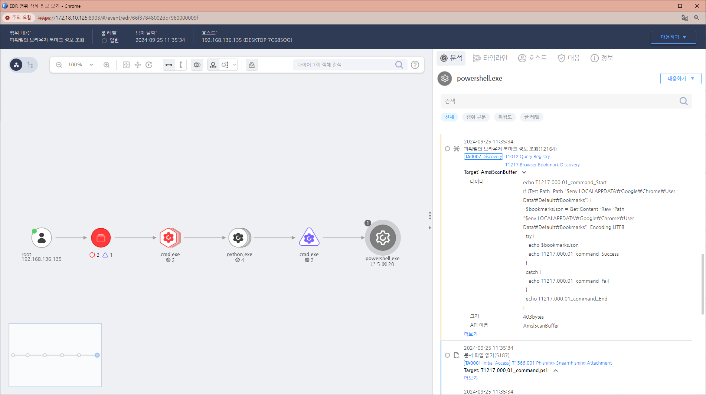

MITRE ATT&CK 액션을 기준으로 대응 방안을 작성
Current Process Name = powershell.exe AND Action = System-AmsiScan AND AmsiScanData =(contain) "Get-Content" AND "Google\Chrome\User Data\Default\Bookmarks" OR "AppData\Local\Microsoft\Edge\User Data\Default\Bookmarks"

해당 행위를 수행한 프로세스를 종료합니다. 공격자에 의해 PC가 제어되었을 가능성이 있으므로 호스트 네트워크를 격리합니다. 공격자 C&C 서버로 추정되는 주소를 차단합니다. 노출된 계정의 비밀번호를 변경합니다.
브라우저에 자격 증명 저장 제한
다중 인증 활성화(Multi-Factor Authentication)
브라우저 보안 설정 강화
보안 패치 및 업데이트
자격 증명 접근 모니터링 및 알림
Action 실행시 함께 영향을 받는 다른 Techniqes
| ATT&CK |
|---|
| T1217.000 |
| D3FEND |
|---|
| D3-SPP Strong Password Policy |